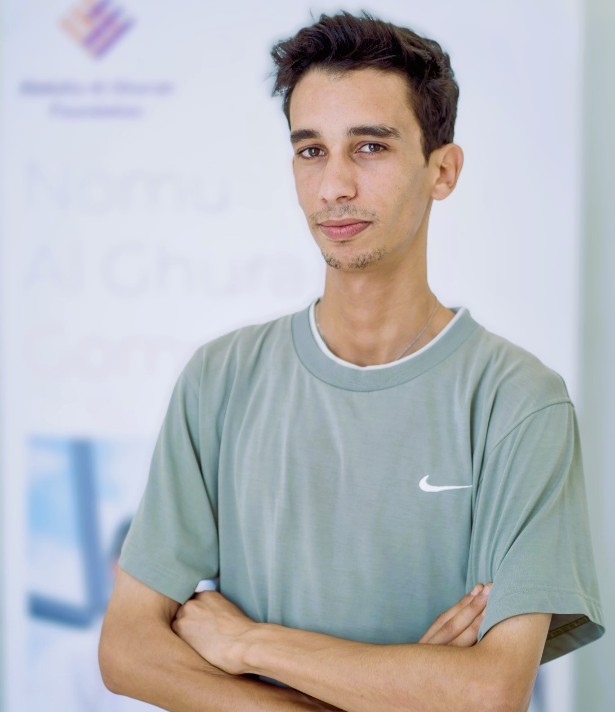

Aidora
2026Turning complex data into calm, actionable interfaces for modern teams.
Software developer · Tunisia / Remote
I’m Muhammed Amine Balti. I design and develop thoughtful web experiences that feel fast, useful, and distinctly human.

Selected work / 01—03
A few projects where design thinking, clean code, and real-world constraints meet.
Turning complex data into calm, actionable interfaces for modern teams.
A focused storefront experience built around discovery and speed.
Small, opinionated tools that remove friction from everyday workflows.
Exploring interaction, visual systems, and the edges of the browser.
A little context
Good software is clear before it is clever.
I care about the details people feel: the useful default, the quick response, the message that makes sense. I work across product, interface, and engineering to make those details intentional.
Have a good idea?
Whether you’re starting from a blank page or improving something that already exists, I’d love to hear what you’re working on.
Say hello ↗